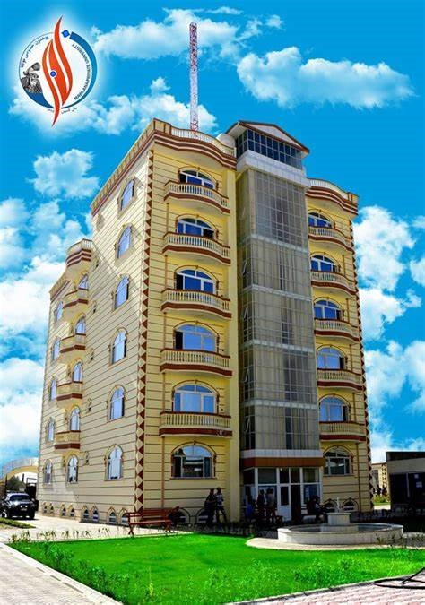

Maulana Jalaluddin Mohammad Balkhi University, sihas been trying to provide decent services to the people of this land with effective activities and providing better educational services. Over a decade of work experience and activity, many achievements and initiatives have been granted to Maulana University in the light of the prudent guidelines of the Ministry of Higher Education of the country..If you would like to study at a university in the heart of the city that focuses on changing the world for the better tomorrow, you’re choosing the right place. We do not use unique formulas to select students. We look at every single applicant’s application, academic and personal, to select students who suit our community with a full range of backgrounds.Campus on a tour designed for prospective graduate and professional students. You will see how our university like, facilities, studenst and life in this university. Meet our graduatnce its establishment in 1386 AH, e admissions representative to learn more about our graduate programs and decide what it the best for you.During this long period, Maulana Jalaluddin Muhammad Balkhi University has also provided valuable services in the fields of serving the poor and young people who do not have financial means, and has tried as much as possible so that no young person in this country is deprived of the umbrella of science and knowledge. . Therefore, there was an urgent need to prepare a birth certificate for the introduction of this scientific institution, so that it would reflect the full view of the activity and achievements of this university.
Political Science
Medical
Economic
Computer Science
Education
Journalism